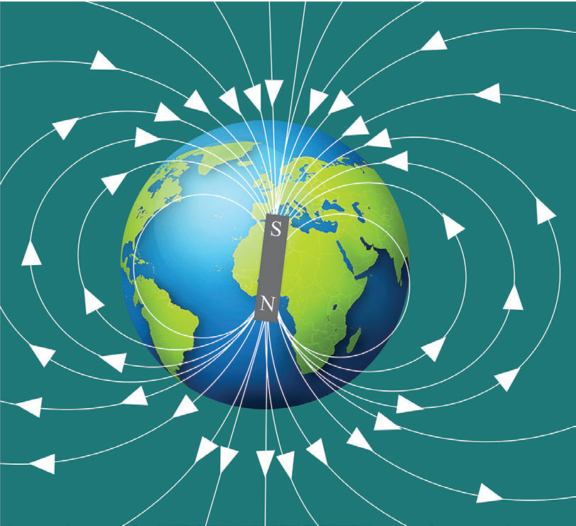

Exercise 3.3
A student wants to turn an iron nail into a temporary magnet to pick up small pins.
What should the student do to magnetise the nail, and how will the student know it has become magnetic?
Two students tried to magnetise two similar iron nails.
Student A used the stroking method, and Student B placed the nail inside a solenoid and passed an electric current.
Later, Student A’s magnet picked up fewer paper clips than Student B’s.
Describe the methods used.
Why were the results different?
A technician suggests heating a magnet to make it stronger.
Do you agree or disagree?
Give reasons.
Suppose you are helping in designing a magnetic tool for lifting nails in a workshop.
However, the magnet gets demagnetised frequently due to rough handling.
Propose an improved design or method that ensures the tool stays magnetised for a longer time, and explain why your design would work better.
A student places a bar magnet under a sheet of paper and sprinkles iron filings on top.
What pattern will the filings form, and what does this show about the magnetic field?
Two magnets, one bar magnet and the other a horseshoe magnet, are placed on a table.
A student uses a compass to trace the field lines around both.
Compare the magnetic field patterns of the two magnets.
A student claims that magnetic field strength is the same all around a bar magnet.
Do you agree or disagree?
Justify your answer.
Earth’s magnetic field
The Earth behaves as if it has a short bar magnet inside it (See Figure 3.44). This apparent magnet is inclined at a small angle to the Earth’s axis of rotation, with its south pole pointing in the northern hemisphere. This is inferred from the fact that the compass needle points towards the true north only at certain locations.

The source of the Earth’s magnetism remains uncertain and lacks a straightforward explanation. However, it is believed that the generation of the magnetic field is linked to the rotation of the Earth. This leads to the rotation of the metallic iron fluid that makes up a large portion of the interior of the Earth. The Earth has two sets of poles, the north